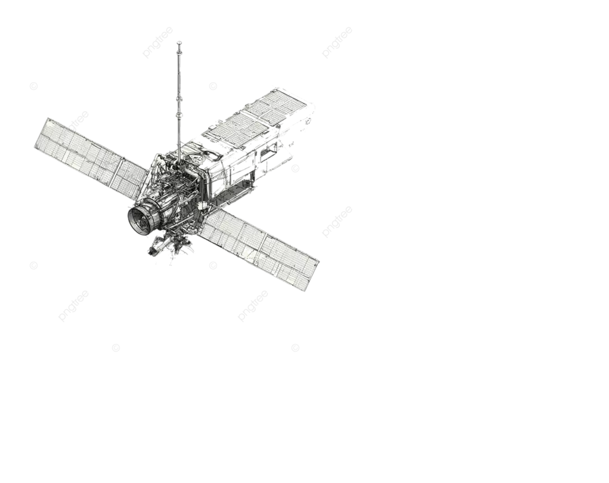
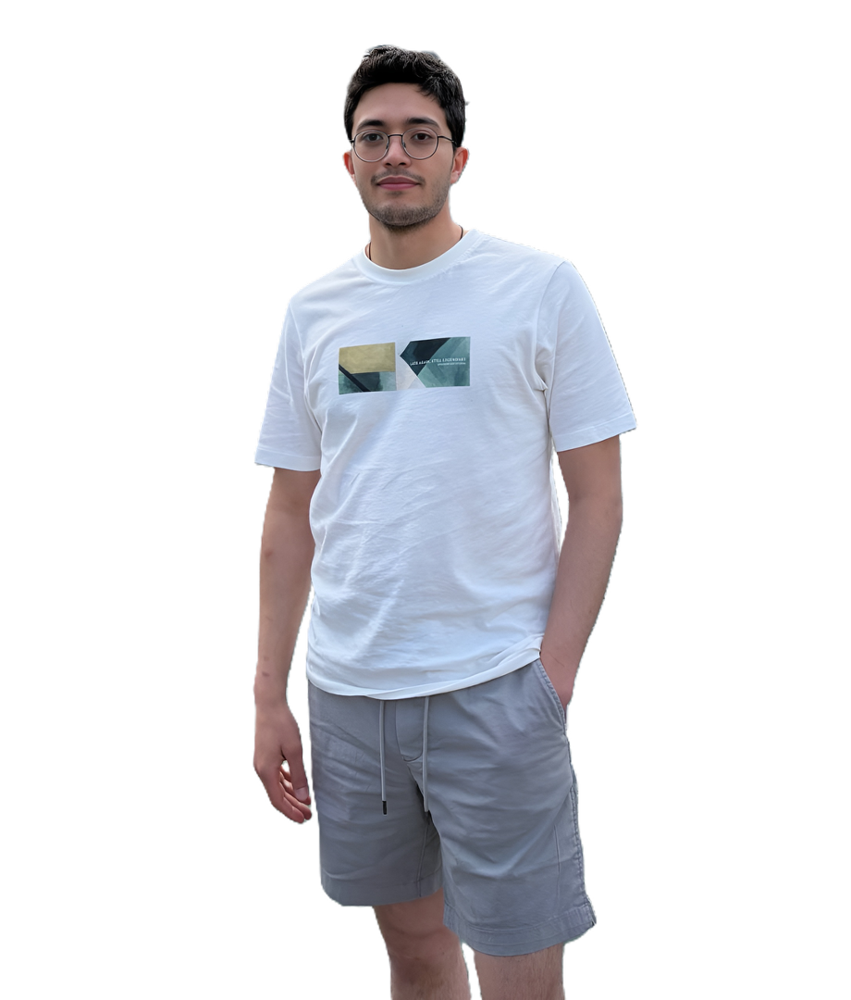

Three-Stage Cryostat
Preliminary experimental setup for CFRP samples to find their mechanical properties in a simulated space and stratospheric environment.
View project →Hello, I’m
Aerospace Engineering·Instrumentation
I am working on designing and validating systems for aerospace research, combining mechanical design and instrumentation along with data acquisition.


Preliminary experimental setup for CFRP samples to find their mechanical properties in a simulated space and stratospheric environment.
View project →Automated 3-degree-of-freedom surface scanning system to find different material surface roughness under different conditions and characterization.
View project →Room-temperature validation of a non-contact analysis method for CFRP and reference materials prior to cryogenic testing.
View project →Finding the optimal solution for an asteroid mining scenario, using Particle Swarm Optimization.
View project →A compact archive of undergrad projects contains automatic control, navigation and guidance, materials science, heat transfer, and space mission design.
View archive →